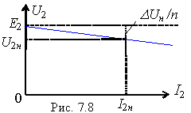
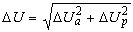
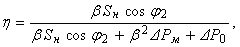

7.4.2. Внешняя характеристика трансформатора
Вектор ZкI1 (см. рис. 7.7, б) соответствует потерям напряжения в трансформаторе при передаче электрической энергии от сети к нагрузке, что отражает внешняя характеристика трансформатора U2 = f(I2).
Обращаясь к схеме рис. 7.7, а и векторной диаграмме (рис. 7.7, б), запишем уравнение внешней характеристики трансформатора
U'2 = U1н - ZкI1 = U1н - ZкI'2.
Поделив на коэффициент трансформации n, имеем
| U2 = U2x - ZкI2 или U2 ≈ E2 - ZkI2, где E2 ≈ U2x. | (7.11) |
U2х = E2 при I2 = 0 и U2 = U2н при I2 = I2н.
 |
Падение напряжения в трансформаторе ΔUн ≈ ZкI1н ≈ ZкI2н/n. Напряжение короткого замыкания трансформатора ZкI1н (см. опыт КЗ) U1к ≈ (0.05...0.15)U1н ≈ ΔUн.
ΔUa = βRкI1н ≈ βRкI2н/n; ΔUp = βXкI1н ≈ βXкI2н/n. |
Тогда падение напряжения в трансформаторе при любой нагрузке
.
При заданном коэффициенте мощности нагрузки cos φ2 падение напряжения
ΔU = β(ΔUacos φ2 + ΔUpsin φ2). КПД трансформатора при заданных коэффициентах β и cos φ2
|  | (7.13) |